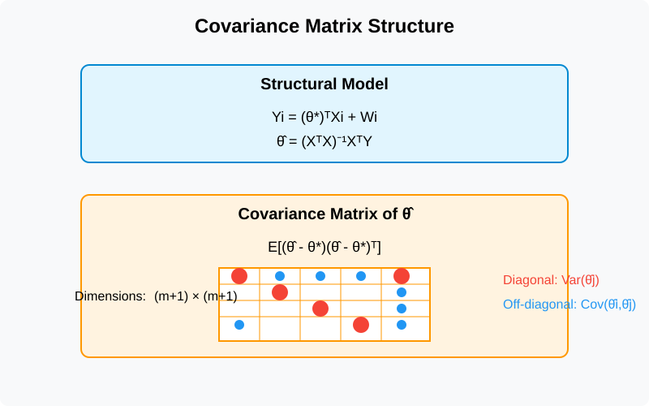
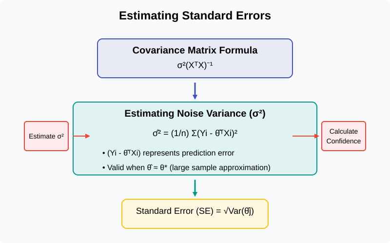
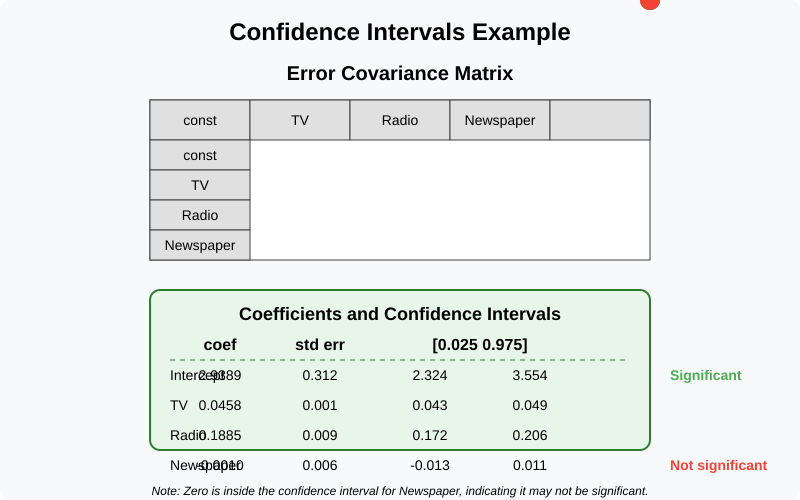

Covariance Matrix of Coefficients
Quick Navigation
- Introduction
- The Covariance Matrix
- Estimating the Variance
- Applying the Covariance Matrix
- Interpreting Hypothesis Tests
- References & Further Reading
Introduction
The coefficient vector θ̂ in linear regression is a random variable. By understanding the properties of this random variable, particularly its variance, we can construct confidence intervals and perform hypothesis testing. To accomplish this, we need to determine the standard errors of the different components of θ̂. This document explains how this is done through the covariance matrix of coefficients.
The Covariance Matrix
Definition and Structure
The covariance matrix of the estimated coefficient vector θ̂ quantifies the uncertainty in our regression estimates. When we assume that the structural model is linear, we can derive this covariance matrix analytically.

The linear structural model assumes that:
Yi = (θ*)ᵀXi + Wi
Where: - Yi is the target variable - Xi is the feature vector - θ* is the true parameter vector - Wi is the noise term (independent, zero mean, variance σ²)
Under this model, the ordinary least squares (OLS) estimator is:
θ̂ = (XᵀX)⁻¹XᵀY
The covariance matrix of θ̂ is given by:
E[(θ̂ - θ)(θ̂ - θ)ᵀ]
This is a matrix of dimensions (m + 1) × (m + 1), where m is the number of features.
Interpreting the Matrix Elements
The covariance matrix has two important components:
- Diagonal entries: Var(θ̂j) - These represent the variance of each estimated coefficient
- Off-diagonal entries: Cov(θ̂i, θ̂j) - These represent the covariances between different estimated coefficients
In practice, we primarily focus on the diagonal entries, as they provide the variances needed to compute standard errors for confidence intervals and hypothesis testing.
Estimating the Variance
The Formula for Standard Errors
The formula for the covariance matrix of θ̂ involves the noise variance σ², which is usually unknown and must be estimated:
σ²(XᵀX)⁻¹
This formula takes the data (the X's of all records) and applies linear algebraic matrix operations. Since the true variance of the noise (σ²) is unknown, regression software estimates this value.

Estimating Noise Variance
To estimate the noise variance σ², we use the following formula:
σ̂² = (1/n) Σ(Yi - θ̂ᵀXi)²
Where: - n is the number of data points - (Yi - θ̂ᵀXi) is the prediction error
This formula has a slight downward bias, but the bias is negligible when the number of data points (n) is much larger than the number of features (m).
The rationale behind this estimator is: 1. If θ̂ ≈ θ*, and 2. σ² = E[Wi²]
Then:
σ² ≈ (1/n) Σ(Yi - (θ*)ᵀXi)² ≈ (1/n) Σ(Yi - θ̂ᵀXi)²
We take the predicted values of the different Y's, subtract them from the actual values, and square the differences. If our predictions are accurate (i.e., if we knew the correct θ*), then these prediction errors would approximate the noise terms. By averaging the squares of these terms, we get a good estimate of the noise variance.
Applying the Covariance Matrix
Creating Confidence Intervals
Once we have estimated the covariance matrix, regression software:
- Extracts the diagonal elements (variances)
- Takes the square root to obtain standard errors
- Uses these standard errors to construct confidence intervals
For example, a 95% confidence interval for θj is:
[θ̂j - 2σj, θ̂j + 2σj]
Where σj is the square root of the jth diagonal element of the estimated covariance matrix.

Hypothesis Testing
The covariance matrix enables hypothesis testing, particularly for testing whether coefficients are significantly different from zero. For each coefficient, we can:
- Construct a confidence interval using the standard error
- Check if the interval contains zero
If the confidence interval does not contain zero, we reject the null hypothesis (H₀: θj* = 0) and consider the coefficient significant. If the interval contains zero, we fail to reject the null hypothesis, indicating that the data are compatible with the coefficient being zero.
In our example: - The first three confidence intervals (for Intercept, TV, and Radio) do not contain zero, so these coefficients are significant - The confidence interval for Newspaper contains zero, so we do not reject the null hypothesis for this coefficient
Interpreting Hypothesis Tests
Careful Interpretation is Essential
The interpretation of hypothesis test results requires careful consideration. Statisticians have noted that in a large fraction of published papers, the interpretations of statistical results are incorrect.

When We Reject the Null Hypothesis
When we reject the null hypothesis (H₀: θj* = 0), it means:
- The data seem inconsistent with the null hypothesis
- If θj* was truly zero, we would have observed the data we saw with a probability of less than 5%
- The data provide evidence that θj* ≠ 0
It's important to remember that we might incorrectly reject a true null hypothesis about 5% of the time.
When We Fail to Reject the Null Hypothesis
When we do not reject the null hypothesis, it does NOT mean we are accepting that θj* = 0. Instead, it means:
- θj* equal to zero is possible
- The data do not provide compelling evidence that θj* ≠ 0
There are several possible scenarios when we fail to reject the null:
- No effect: The null could be true (θj* = 0)
- Small effect: θj* might be non-zero but so close to zero that the data cannot detect it
- Too few data: θj* might be far from zero, but our dataset is too small to provide sufficient evidence
To summarize, when we "accept" the null hypothesis, it may be because the null is true or because the data are not informative enough to detect the deviation from the null.
References & Further Reading
- Hastie, T., Tibshirani, R., & Friedman, J. (2009). The Elements of Statistical Learning: Data Mining, Inference, and Prediction. Springer Science & Business Media.
- James, G., Witten, D., Hastie, T., & Tibshirani, R. (2013). An Introduction to Statistical Learning. Springer.
- Wasserman, L. (2013). All of Statistics: A Concise Course in Statistical Inference. Springer Science & Business Media.
- Linear Regression and its Implementation - Microsoft Research
- Understanding the Covariance Matrix - NVIDIA Developer Blog
- Statistical Inference and Hypothesis Testing - Google AI Blog
- Interpreting p-values Correctly - Nature
- Linear Models and Regression - OpenAI Research